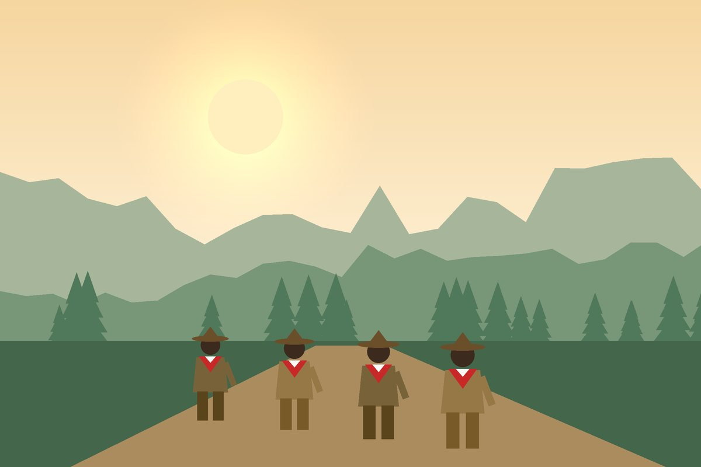

Jumat
15.30 – 17.30 WIB
Penggalang
Tali-temali, pionering, dan semaphore
Lapangan sekolah
Kegiatan
Cerita kegiatan, latihan rutin, dan bakti yang kami jalani bersama setiap pekan.
Latihan rutin
Datang tepat waktu dengan seragam lengkap. Jadwal hari ini ditandai otomatis.
Tali-temali, pionering, dan semaphore
Lapangan sekolah
Jadwal latihan semester ini akan segera diumumkan.
Kabar kegiatan

Regu penggalang belajar membaca peta, kompas, dan jejak sambil menyusuri jalur hutan pinus.
Belum ada cerita kegiatan. Nantikan kabar dari kami!
Program unggulan
Perkemahan Sabtu–Minggu: api unggun, jurit malam, dan pentas seni regu.
Hiking berpeta dan berkompas dengan pos-pos tantangan di sepanjang jalur.
Menanam pohon, bersih sungai, dan membantu warga sekitar pangkalan.
Ajang uji keterampilan regu dari tingkat ranting sampai nasional.